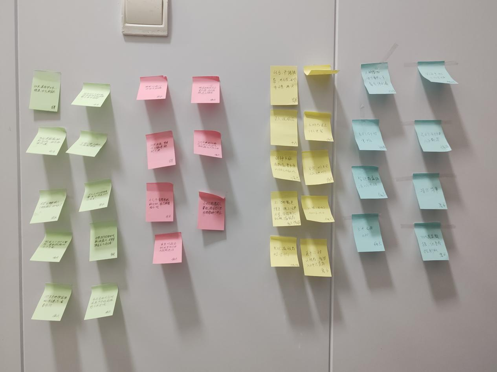
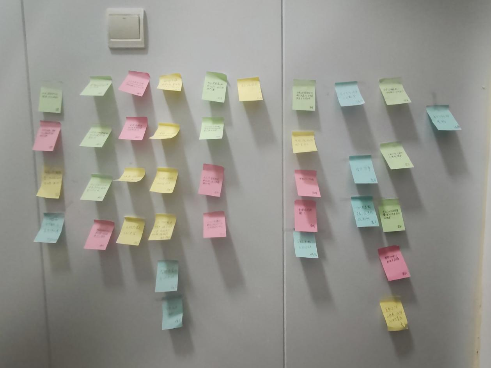

陈国伟
访谈脚本撰写 · 全文审阅与改进
访谈员统筹
我们想帮独居、空巢的慢性病老人按时、按量服药：提醒方式适合老人，记录和共享由老人自己决定，家人远程查看时也不会变成“监控”。

队名：起个队名真的好难啊。我们是来自人机交互课程的四人小组。
访谈脚本撰写 · 全文审阅与改进
访谈员统筹
访谈脚本撰写
访谈员
调查问卷设计
访谈员问卷
调查问卷设计
访谈员问卷
老年人用药管理与子女远程联动 App
我国老龄化程度不断加深，独居、空巢老人越来越多。他们很多人有高血压、糖尿病等慢性病，每天要吃好几种药，但记性变差，经常漏服或错服。子女大多在外地工作，没法实时知道父母到底吃没吃药。现有的用药提醒 App 大多是为年轻人设计的，操作复杂，而且多是单机版，子女无法远程查看服药记录。

要吃的药种类多、时间不一样，只靠记忆很容易漏服，有时还会因为“不确定吃没吃”而重复服药。

现有 App 字太小、流程长、弹广告、要注册；闹钟和药盒提醒声音要么听不见，要么太刺耳。

子女只能靠打电话问“今天吃药了吗”，老人觉得被盘问，子女也不完全相信回答。
全屏弹窗、大字显示，同时语音播报“该吃降压药了”。
一个大按钮确认服药，不用注册，也不用多层跳转。
子女在手机上查看服药记录，漏服时收到通知。
老人决定谁能看、看什么，并且可以随时暂停共享。
我们用两种方法收集数据：先通过半结构化访谈深入了解老人，再通过问卷大范围了解家庭照护者的需求。
对象：需要长期服药的老年人
人数：4 位
时长：约 30 分钟 / 人
记录：征得同意后录音，整理成逐字稿
对象：关心或协助 60 岁以上亲属用药的成年子女和其他照护者
样本：10 份以上（实际 11 份）
时长：5–7 分钟，匿名填写
访谈分为四个阶段，其中阶段 3 是主体，包含三个话题。每个话题都会根据回答临时追问（what / why / how），橙色文字为追问示例。
说明研究目的（了解老人日常用药的实际情况，用来设计更适合老人的工具），告诉对方访谈约 30 分钟，可以随时跳过不想回答的问题或停止访谈；征得同意后录音，录音只用于内部分析，不会公开。
阶段 3主体访谈 · 三个话题
总结访谈内容并感谢对方。最后问一个问题：“如果未来有一款专门为老年人设计的用药提醒工具，既能提醒吃药，也能让在外地的孩子看到您有没有按时吃药，您觉得它最应该先帮您解决什么问题？”
问卷对象：关心或协助 60 岁以上亲属用药的成年子女和其他家庭照护者。Q1 选“从未”的人直接结束作答。
对 11 份问卷做描述统计，对 4 场访谈做亲和图分析。完整的报告与原始数据见提交的 PDF。
单选题报告人数与占比，多选题报告每个选项被选的人数（占比以 11 人为基数，合计可超过 100%），1–5 分量表题报告均值。图中的条形可以悬停查看精确数值，每张图下方都可以展开数据表。
受访者以照顾父母为主（7 人，63.6%），年龄集中在 26–45 岁（8 人，72.7%）。8 人（72.7%）当天能到达老人身边，另有 3 人需要一天以上或无法亲自到达。照护常常不是一个人的事：主要负责人与共同负责人各 4 人，8 人表示还有其他家人一起关注老人用药。
| 选项 | 人数 | 占比（N=11） |
|---|---|---|
| 经常 | 7 | 63.6% |
| 偶尔 | 3 | 27.3% |
| 只在紧急情况下 | 1 | 9.1% |
| 选项 | 人数 | 占比（N=11） |
|---|---|---|
| 父母 | 7 | 63.6% |
| 配偶的父母 | 1 | 9.1% |
| 祖父母或外祖父母 | 1 | 9.1% |
| 配偶 | 1 | 9.1% |
| 其他亲属 | 1 | 9.1% |
| 选项 | 人数 | 占比（N=11） |
|---|---|---|
| 18至25岁 | 1 | 9.1% |
| 26至35岁 | 4 | 36.4% |
| 36至45岁 | 4 | 36.4% |
| 46至55岁 | 2 | 18.2% |
| 56岁及以上 | 0 | 0.0% |
| 选项 | 人数 | 占比（N=11） |
|---|---|---|
| 30分钟以内 | 3 | 27.3% |
| 30分钟至2小时 | 1 | 9.1% |
| 当天可以到达 | 4 | 36.4% |
| 需要一天以上 | 2 | 18.2% |
| 目前无法亲自到达 | 1 | 9.1% |
| 选项 | 人数 | 占比（N=11） |
|---|---|---|
| 主要负责人 | 4 | 36.4% |
| 与其他家人共同负责 | 4 | 36.4% |
| 偶尔协助 | 2 | 18.2% |
| 只处理紧急情况 | 1 | 9.1% |
| 选项 | 人数 | 占比（N=11） |
|---|---|---|
| 没有 | 2 | 18.2% |
| 1人 | 3 | 27.3% |
| 2人 | 3 | 27.3% |
| 3人及以上 | 2 | 18.2% |
| 不清楚 | 1 | 9.1% |
| 选项 | 人数 | 占比（N=11） |
|---|---|---|
| 几乎不花时间 | 2 | 18.2% |
| 30分钟以内 | 2 | 18.2% |
| 30至60分钟 | 5 | 45.5% |
| 1至2小时 | 2 | 18.2% |
| 2小时以上 | 0 | 0.0% |
七项功能中，紧急情况联络（4.73）、漏服或逾期提醒（4.55）和查看服药确认记录（4.27）排在前三；周度服药统计最低（3.27）。最担心的情况是漏服（8 人，72.7%）。漏服提醒里，大家最想看到药物名称、计划服药时间（各 10 人）和已逾期时长（9 人），没有人需要看老人手机的网络或电量状态。
| 功能 | 均值 | 标准差 | 评 4–5 分人数 |
|---|---|---|---|
| 紧急情况联络 | 4.73 | 0.47 | 11 |
| 接收漏服或逾期提醒 | 4.55 | 0.52 | 11 |
| 查看服药确认记录 | 4.27 | 0.79 | 9 |
| 多名家人共同照护 | 3.82 | 0.98 | 7 |
| 远程同步服药计划 | 3.73 | 0.90 | 7 |
| 记录处方调整 | 3.45 | 1.13 | 6 |
| 查看周度服药统计 | 3.27 | 0.79 | 5 |
| 选项 | 人数 | 占比（N=11） |
|---|---|---|
| 5 分（非常担心） | 3 | 27.3% |
| 4 分 | 4 | 36.4% |
| 3 分 | 4 | 36.4% |
| 2 分 | 0 | 0.0% |
| 1 分（完全不担心） | 0 | 0.0% |
| 选项 | 人数 | 占比（N=11） |
|---|---|---|
| 漏服 | 8 | 72.7% |
| 服错药物或剂量 | 4 | 36.4% |
| 出现不良反应 | 4 | 36.4% |
| 长时间联系不上老人 | 4 | 36.4% |
| 重复服药 | 3 | 27.3% |
| 服药时间错误 | 3 | 27.3% |
| 处方调整后仍按旧计划服药 | 2 | 18.2% |
| 选项 | 人数 | 占比（N=11） |
|---|---|---|
| 药物名称 | 10 | 90.9% |
| 计划服药时间 | 10 | 90.9% |
| 已逾期时长 | 9 | 81.8% |
| 老人最近一次操作时间 | 4 | 36.4% |
| 负责跟进的家人 | 3 | 27.3% |
| 老人手机的网络或电量状态 | 0 | 0.0% |
逾期未确认时怎么处理，意见分成三派：“逐级通知”“同时通知多位家人”“先再提醒老人再通知我”各 3 人。确认方式以老人点击按钮为主（4 人），语音、智能药盒和只提醒不确认各有 2 人支持。协作功能中最需要的是共同查看服药记录（9 人）；修改服药计划的权限，6 人认为应由老人和指定家人共同拥有。
| 选项 | 人数 | 占比（N=11） |
|---|---|---|
| 立即通知 | 2 | 18.2% |
| 10分钟 | 1 | 9.1% |
| 30分钟 | 4 | 36.4% |
| 1小时 | 2 | 18.2% |
| 由家人自行设置 | 2 | 18.2% |
| 不需要通知 | 0 | 0.0% |
| 选项 | 人数 | 占比（N=11） |
|---|---|---|
| 逐级通知（老人→主要照护者→其他家人） | 3 | 27.3% |
| 同时通知多位家人 | 3 | 27.3% |
| 先再提醒老人，再通知我 | 3 | 27.3% |
| 只通知我 | 1 | 9.1% |
| 不自动升级通知 | 1 | 9.1% |
| 选项 | 人数 | 占比（N=11） |
|---|---|---|
| 老人点击按钮确认 | 4 | 36.4% |
| 老人语音确认 | 2 | 18.2% |
| 智能药盒自动记录 | 2 | 18.2% |
| 只提醒，不要求提供确认 | 2 | 18.2% |
| 拍照确认 | 1 | 9.1% |
| 可穿戴设备自动记录 | 0 | 0.0% |
| 选项 | 人数 | 占比（N=11） |
|---|---|---|
| 共同查看服药记录 | 9 | 81.8% |
| 查看其他家人的跟进结果 | 6 | 54.5% |
| 指定本次跟进人 | 4 | 36.4% |
| 填写简短备注 | 4 | 36.4% |
| 标记“已处理” | 3 | 27.3% |
| 不需要协作功能 | 2 | 18.2% |
| 选项 | 人数 | 占比（N=11） |
|---|---|---|
| 老人和指定家人 | 6 | 54.5% |
| 仅主要照护者 | 2 | 18.2% |
| 仅老人本人 | 1 | 9.1% |
| 所有家庭成员 | 1 | 9.1% |
| 由老人逐次授权 | 1 | 9.1% |
| 选项 | 人数 | 占比（N=11） |
|---|---|---|
| 微信消息 | 6 | 54.5% |
| App通知 | 5 | 45.5% |
| 短信 | 4 | 36.4% |
| 自动电话 | 4 | 36.4% |
| 电子邮件 | 0 | 0.0% |
在老人同意的前提下，10 人愿意共享“是否按时服药”和“异常提醒”，认为可以共享健康状况和位置的各只有 1 人。阻碍使用的因素里，“老人不愿意使用”最多（5 人），收费问题只有 1 人，没有人选“不信任健康数据的安全性”。
| 选项 | 人数 | 占比（N=11） |
|---|---|---|
| 是否按时服药 | 10 | 90.9% |
| 异常提醒 | 10 | 90.9% |
| 剂量和服药时间 | 6 | 54.5% |
| 药物名称 | 5 | 45.5% |
| 历史服药统计 | 5 | 45.5% |
| 健康状况或疾病信息 | 1 | 9.1% |
| 位置信息 | 1 | 9.1% |
| 以上信息均不应默认共享 | 1 | 9.1% |
| 选项 | 人数 | 占比（N=11） |
|---|---|---|
| 5 分（非常同意） | 3 | 27.3% |
| 4 分 | 6 | 54.5% |
| 3 分 | 2 | 18.2% |
| 2 分 | 0 | 0.0% |
| 1 分（非常不同意） | 0 | 0.0% |
| 选项 | 人数 | 占比（N=11） |
|---|---|---|
| 5 分（非常愿意） | 3 | 27.3% |
| 4 分 | 6 | 54.5% |
| 3 分 | 2 | 18.2% |
| 2 分 | 0 | 0.0% |
| 1 分（完全不愿意） | 0 | 0.0% |
| 选项 | 人数 | 占比（N=11） |
|---|---|---|
| 老人不愿意使用 | 5 | 45.5% |
| 担心侵犯老人隐私 | 4 | 36.4% |
| 担心提醒不准确 | 4 | 36.4% |
| 家人意见不一致 | 4 | 36.4% |
| 手机或网络条件不足 | 4 | 36.4% |
| 操作或绑定过程复杂 | 3 | 27.3% |
| 收费问题 | 1 | 9.1% |
| 不信任健康数据的安全性 | 0 | 0.0% |
核心价值是“安心确认”，不是复杂统计。需求集中在紧急联络、漏服提醒和服药记录，产品应先把“有没有吃药、出事能不能联系到人”做扎实。
设计必须分层、可配置。通知时机、升级路径、确认方式、可共享信息都没有唯一答案，要按主要照护者、共同照护者、旁亲等角色和老人的能力提供选项。
隐私是底线，开关握在老人手里。默认只共享“是否按时服药”和“异常提醒”，老人可随时暂停共享，不默认推送病史和位置。
| 受访者 | 情况 | 用药 | 访谈员 |
|---|---|---|---|
| 李阿姨，68 岁 | 独居，女儿在外地 | 2 种降压药 | 程运波 |
| 张大爷，72 岁 | 与老伴同住，儿子同城 | 3 种口服药 + 胰岛素 | 陈国伟 |
| 王阿姨，65 岁 | 独居，退休护士长，女儿在国外 | 4 种药 | 朱文冰 |
| 赵大爷，75 岁 | 独居，重度听力障碍 | 3 种药 | 杨伟炳 |


下面是亲和图的文字版，方便在手机上阅读。查看亲和图原图（PNG，可放大）
从“被动服从的吃药任务”走向“有尊严、有温度的家庭远程协作”
生理限制
数字鸿沟
极端风险
物理工具失效
智能硬件劝退
软件体验极差
退回替代方案
健康焦虑
抗拒被监控
沟通挫败感
防御心理
主动授权
界限分明
拒绝越洋盘问
极简操作
被动提醒
情感纽带
我们原以为老人最需要强大的定时提醒，但数据表明，技术接受度低往往来自“怕被骗”和“操作复杂”带来的防御心理。
子女的过度关心（强制共享、盘问式电话）反而会引起老人的逆反和心酸。老人非常看重自己的尊严和对数据的控制权。
需求呈金字塔结构。只有底层的感官适配做好了，中层的极简操作才有意义；顶层的情感连接决定老人愿不愿意长期用下去。
设计结论：